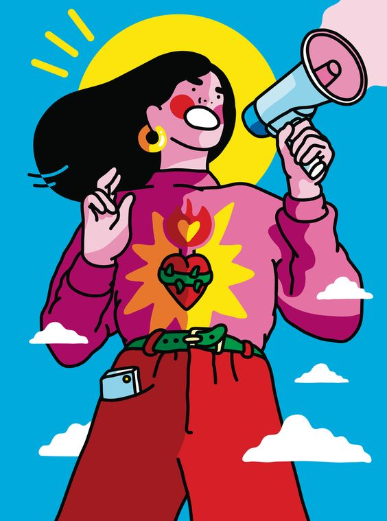
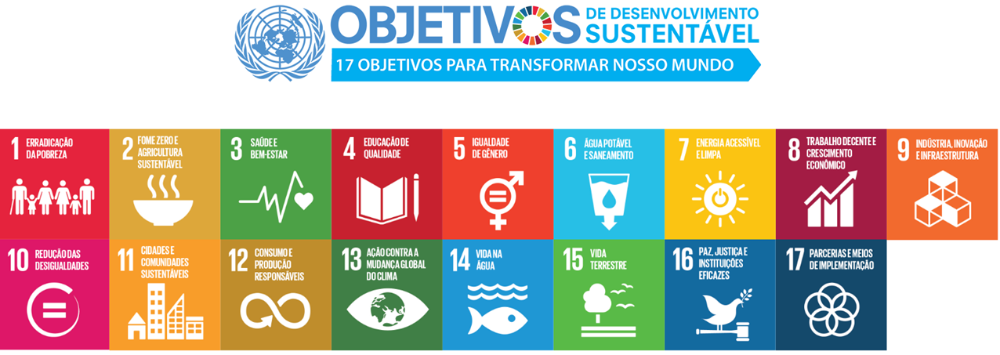
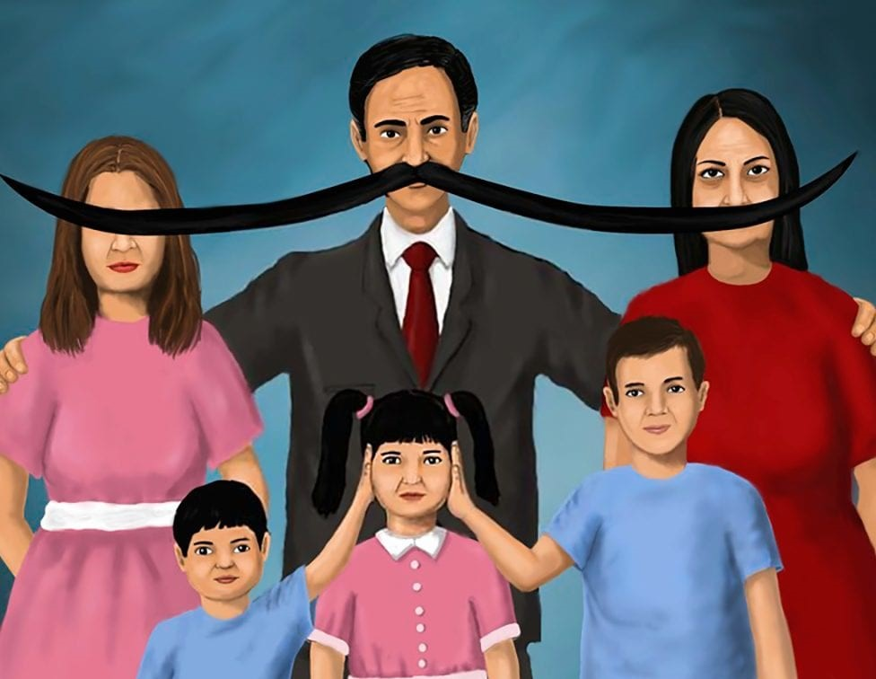

Introdução
Este é um site dedicado a trazer informações sobre a quinta meta global dos Objetivos de Desenvolvimento Sustentável (ODS), a igualdade de gênero.
O que são os Objetivos de Desenvolvimento Sustentável (ODS)?
Foram concluídas em agosto de 2015 as negociações que culminaram na adoção, em setembro, dos Objetivos de Desenvolvimento Sustentável (ODS), por ocasião da Cúpula das Nações Unidas para o Desenvolvimento Sustentável. Processo iniciado em 2013, seguindo mandato emanado da Conferência Rio+20, os ODS deverão orientar as políticas nacionais e as atividades de cooperação internacional nos próximos quinze anos, sucedendo e atualizando os Objetivos de Desenvolvimento do Milênio (ODM). Chegou-se a um acordo que contempla 17 Objetivos e 169 metas, envolvendo temáticas diversificadas, como erradicação da pobreza, segurança alimentar e agricultura, saúde, educação, igualdade de gênero, água e saneamento, energia, crescimento econômico sustentável, infraestrutura, redução das desigualdades, cidades sustentáveis, padrões sustentáveis de consumo e de produção, mudança do clima, proteção e uso sustentável dos oceanos e dos ecossistemas terrestres, sociedades pacíficas, justas e inclusivas e meios de implementação.
O que é a igualdade de gênero e qual sua importância?
Para a Constituição Federal Brasileira, homens e mulheres são iguais em direitos e obrigações.Conforme as definições internacionais, igualdade de gênero refere-se à igualdade em direitos, responsabilidades e oportunidades das mulheres e dos homens, bem como das meninas e dos meninos. Igualdade não significa que mulheres e homens são os mesmos, mas que os direitos, responsabilidades e oportunidades dos homens e das mulheres não devem depender do fato de nascerem do sexo masculino ou feminino. Igualdade de gênero indica que os interesses, necessidades e prioridades de homens e mulheres devem ser levadas em consideração, reconhecendo a diversidade dos diferentes grupos de homens e mulheres. A igualdade de gênero não é uma questão das mulheres, mas deve envolver igualmente homens e mulheres. Igualdade entre mulheres e homens é uma questão de direitos humanos e também condição para e indicador de desenvolvimento sustentável centrado nas pessoas. Para que seja plenamente alcançada, deverá incluir as especificidades de mulheres negras, indígenas, quilombolas, lésbicas e bissexuais, pessoas trans, entre outras.
Objetivos da 5º ODS (Igualdade de gênero):
5.1 Acabar com todas as formas de discriminação contra todas as mulheres e meninas em toda parte
Discriminação contra a mulher significa toda a distinção, exclusão ou restrição baseada no sexo e que tenha por objeto ou resultado prejudicar ou anular o reconhecimento, gozo ou exercício pela mulher, independentemente de seu estado civil com base na igualdade do homem e da mulher, dos direitos humanos e liberdades fundamentais nos campos político, econômico, social, cultural e civil, bem como em qualquer outro campo.

5.2 Eliminar todas as formas de violência contra todas as mulheres e meninas nas esferas públicas e privadas, incluindo o tráfico e exploração sexual e de outros tipos
Segundo a Convenção da ONU sobre a Eliminação da Violência contra a Mulher, violência contra as mulheres significa qualquer ato de violência baseado no gênero do qual resulte, ou possa resultar, dano ou sofrimento físico, sexual ou psicológico para as mulheres, incluindo as ameaças de tais atos, a coação ou a privação arbitrária de liberdade, que ocorra, quer na vida pública, quer na vida privada.
5.3 Eliminar todas as práticas nocivas, como os casamentos prematuros, forçados e de crianças e mutilações genitais femininasCasamento forçado é aquele que ocorre sem o pleno consentimento livre ou válido de um ou ambos nubentes e/ou no qual uma ou ambas partes é impossibilitada de dar fim ou deixar o casamento, incluindo como resultado de coação física ou emocional, incluindo intensa pressão social e familiar. Casamentos forçados são graves violações dos direitos humanos.A desigualdade de gênero que resulta na restrição da autonomia de mulheres e meninas de decidirem sobre suas próprias vidas e, em certos contextos, a serem inclusive consideradas como bens, é uma das principais causas dos casamentos forçados, o que também vale para os casamentos na infância ou na adolescência. Tratadas de forma discriminatória, essas mulheres e meninas são impossibilitadas de tomar decisões sobre com quem e quando casar.
5.4 Reconhecer e valorizar o trabalho de assistência e doméstico não remunerado, por meio da disponibilização de serviços públicos, infraestrutura e políticas de proteção social, bem como a promoção da responsabilidade compartilhada dentro do lar e da família, conforme os contextos nacionais
5.5 Garantir a participação plena e efetiva das mulheres e a igualdade de oportunidades para a liderança em todos os níveis de tomada de decisão na vida política, econômica e pública
5.6 Assegurar o acesso universal à saúde sexual e reprodutiva e os direitos reprodutivos, como acordado em conformidade com o Programa de Ação da Conferência Internacional sobre População e Desenvolvimento e com a Plataforma de Ação de Pequim e os documentos resultantes de suas conferências de revisão
A saúde é um estado de completo bem-estar físico, mental e social e não simplesmente a ausência de doença ou enfermidade. A saúde sexual e reprodutiva refere-se a todas as matérias relativas ao sistema sexual e reprodutivo e a suas funções e processos. A saúde sexual implica que a pessoa possa ter uma vida sexual segura e satisfatória, a partir do acesso à informação, insumos e serviços de prevenção e tratamento de doenças e infecções sexualmente transmissíveis. A saúde reprodutiva implica que o indivíduo tenha a capacidade de reproduzir e a liberdade de decidir sobre quando, e quantas vezes o quer fazer. Implícito nesta última condição está o direito de homens e mulheres de serem informados/as e de ter acesso a métodos eficientes, seguros, permissíveis e aceitáveis de planejamento familiar de sua escolha, assim como outros métodos, de sua escolha, de controle da fecundidade, e o direito de acesso a serviços apropriados de saúde que deem às mulheres condições de passar, com segurança, pela gestação e pelo parto e proporcionem a melhor chance de ter um/a filho/a sadio. A assistência à saúde reprodutiva é definida como o conjunto de métodos, técnicas, insumos e serviços que contribuem para a saúde e o bem-estar reprodutivo, prevenindo e resolvendo problemas de saúde reprodutiva.Os serviços de saúde sexual e reprodutiva devem atender às necessidades dos/as usuários/as e devem estar disponíveis para todas as pessoas, ser acessíveis, aceitáveis e de alta qualidade. Como exemplos destes serviços, incluem-se assistência ginecológica, formas de contracepção segura e efetiva, aborto seguro e assistência pós-aborto nos casos permitidos por lei, assistência à saúde materna, prevenção, diagnóstico e tratamento de doenças sexualmente transmissíveis, atendimento para vítimas de violência sexual e de gênero, tratamentos de infertilidade e fertilidade, prevenção, diagnóstico e tratamento de câncer de mama e do aparelho reprodutor, entre outros.
Metas do ODS 5 para os meios de implementação dos mesmos
5.a Realizar reformas para dar às mulheres direitos iguais aos recursos econômicos, bem como o acesso a propriedade e controle sobre a terra e outras formas de propriedade, serviços financeiros, herança e os recursos naturais, de acordo com as leis nacionais
5.b Aumentar o uso de tecnologias de base, em particular as tecnologias de informação e comunicação, para promover o empoderamento das mulheres
5.c Adotar e fortalecer políticas sólidas e legislação aplicável para a promoção da igualdade de gênero e o empoderamento de todas as mulheres e meninas em todos os níveis